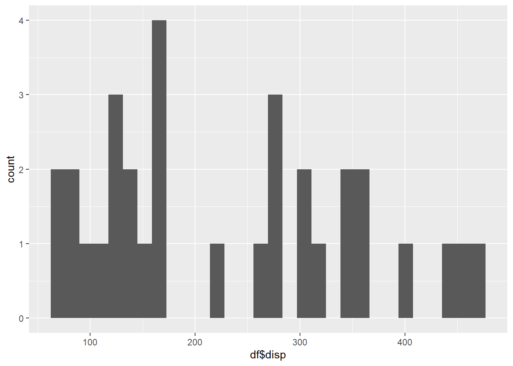

renv::init()- The project is out-of-sync -- use `renv::status()` for details.renv::init()- The project is out-of-sync -- use `renv::status()` for details.install.packages("dplyr")The following package(s) will be installed:
- dplyr [1.1.4]
These packages will be installed into "C:/Users/ACER/Desktop/infostatdev.github.io/renv/library/R-4.3/x86_64-w64-mingw32".
# Installing packages --------------------------------------------------------
- Installing dplyr ... OK [linked from cache]
Successfully installed 1 package in 64 milliseconds.install.packages("ggplot2")The following package(s) will be installed:
- ggplot2 [3.5.2]
These packages will be installed into "C:/Users/ACER/Desktop/infostatdev.github.io/renv/library/R-4.3/x86_64-w64-mingw32".
# Installing packages --------------------------------------------------------
- Installing ggplot2 ... OK [linked from cache]
Successfully installed 1 package in 51 milliseconds.data(mtcars)df <- mtcars
head(df, 10) mpg cyl disp hp drat wt qsec vs am gear carb
Mazda RX4 21.0 6 160.0 110 3.90 2.620 16.46 0 1 4 4
Mazda RX4 Wag 21.0 6 160.0 110 3.90 2.875 17.02 0 1 4 4
Datsun 710 22.8 4 108.0 93 3.85 2.320 18.61 1 1 4 1
Hornet 4 Drive 21.4 6 258.0 110 3.08 3.215 19.44 1 0 3 1
Hornet Sportabout 18.7 8 360.0 175 3.15 3.440 17.02 0 0 3 2
Valiant 18.1 6 225.0 105 2.76 3.460 20.22 1 0 3 1
Duster 360 14.3 8 360.0 245 3.21 3.570 15.84 0 0 3 4
Merc 240D 24.4 4 146.7 62 3.69 3.190 20.00 1 0 4 2
Merc 230 22.8 4 140.8 95 3.92 3.150 22.90 1 0 4 2
Merc 280 19.2 6 167.6 123 3.92 3.440 18.30 1 0 4 4str(df)'data.frame': 32 obs. of 11 variables:
$ mpg : num 21 21 22.8 21.4 18.7 18.1 14.3 24.4 22.8 19.2 ...
$ cyl : num 6 6 4 6 8 6 8 4 4 6 ...
$ disp: num 160 160 108 258 360 ...
$ hp : num 110 110 93 110 175 105 245 62 95 123 ...
$ drat: num 3.9 3.9 3.85 3.08 3.15 2.76 3.21 3.69 3.92 3.92 ...
$ wt : num 2.62 2.88 2.32 3.21 3.44 ...
$ qsec: num 16.5 17 18.6 19.4 17 ...
$ vs : num 0 0 1 1 0 1 0 1 1 1 ...
$ am : num 1 1 1 0 0 0 0 0 0 0 ...
$ gear: num 4 4 4 3 3 3 3 4 4 4 ...
$ carb: num 4 4 1 1 2 1 4 2 2 4 ...library("ggplot2")
ggplot(df)+geom_histogram(aes(x=df$disp))Warning: Use of `df$disp` is discouraged.
ℹ Use `disp` instead.`stat_bin()` using `bins = 30`. Pick better value with `binwidth`.